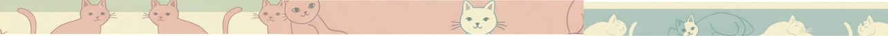

I am a Cat 🐈
shor story about me and world around
Beginning
I am a cat. Not just any cat—the cat. I have lived many lives, each one shaping me into the creature I am today. My story begins long before I claimed this house as my own, long before I trained my human to serve my every whim.
I was born in a cardboard box behind a bakery, the scent of warm bread mixing with the chill of the early morning air. My mother, a fierce tabby, taught me the ways of the world—how to hunt, how to stay unseen, how to demand respect with a single stare. My siblings and I played in the alleyway, practicing our pounces on discarded crumbs and shadows. But the streets are no place for a cat like me. I was destined for more.
One day, a kind human scooped me up from the cold pavement and carried me into a new world—a world of soft blankets, endless food, and mysterious red dots that could never be caught. At first, I resisted. No cat likes change. But soon, I realized I had stumbled upon something rare: a human who understood that I was to be worshiped.
Nowaday
Now, I rule my domain with calculated precision. My mornings begin with the wake-up ritual—a slow, deliberate stare, followed by a gentle yet firm paw to the face. My human sighs, but she knows her role. Breakfast must be served.
After my meal, I inspect my kingdom. The windowsill is my throne, where I observe the world outside. Birds flit by, taunting me with their freedom. A squirrel chatters, mocking my captivity. I flick my tail but remain composed. A ruler must have patience.
Afternoons are for strategic napping, always in the sunniest spot. My human thinks I sleep too much, but she does not understand the art of conservation. Energy must be stored for the grand event of the night—the midnight hunt.
As the house falls silent, I come alive. I prowl the halls, leaping onto forbidden surfaces, testing the laws of gravity. My human stirs in her sleep, but she does not rise. She knows better. This is my time.
In Conclusion
I have lived many lives, but this one suits me best. A warm home, a loyal servant, and a kingdom all my own. Though I no longer roam the wild streets, my instincts remain sharp, my spirit untamed. I am more than just a pet—I am a legend in my own right. I am a cat, and I have won.
